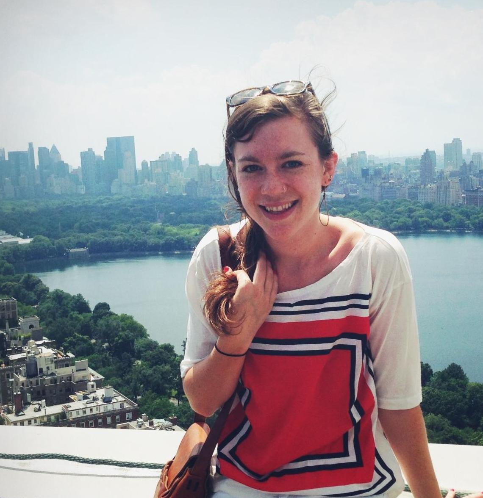

selevinson  gmail.com
gmail.com
Postdoctoral Scholar

Education
2016-Present
Postdoctoral Scholar
University of California, San Francisco
University of California, San Francisco
2011 - 2016
Ph.D., Biomedical Sciences
Icahn School of Medicine at Mount Sinai
Icahn School of Medicine at Mount Sinai
2007-2011
B.S., Microbiology
North Carolina State University
North Carolina State University
Research Interests
T cell engineering | Cancer immunotherapy
Awards
2014 F31 Ruth L. Kirschstein National Research Service Award (NIH)
2011 Valedictorian (North Carolina State University)
2010 Research Experience for Undergraduates Fellowship (NSF)
Publications
Levinson, S., Cagan, R. "Drosophilla cancer models identify functional differences between Ret Fusions". Cell Reports (2016)